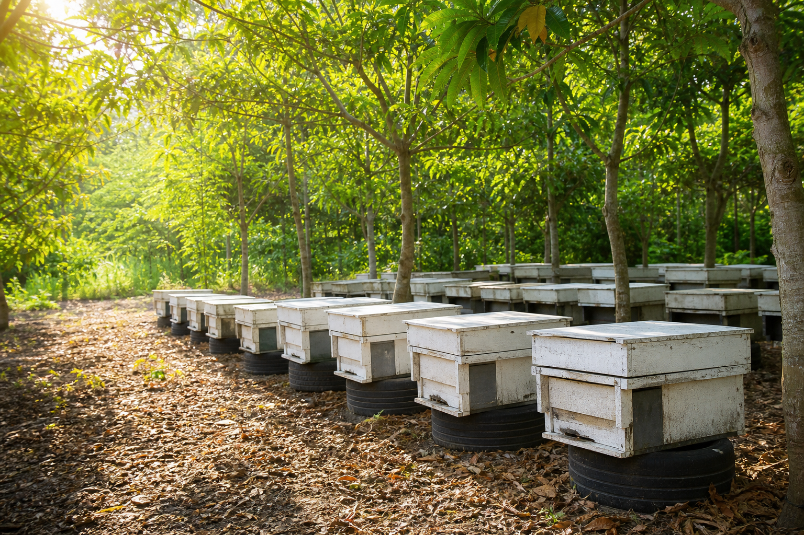

屏東縣枋山鄉｜Jetson Orin Nano 研究系統
智慧蜂箱監測儀表板
整合 SCD30 溫濕度與 CO2 感測、LOGI 4K 巢片影像、Lepton 2.5 熱影像畫面， 並由左右往復滑軌進行連續掃描，協助觀察蜜蜂巢片狀態。
SCD30 Sensor
24 小時環境監測
目前為儀表板示範資料；接上 Jetson 後可改讀 `data/environment.json` 或雲端資料庫。
低 -- ｜ 高 --
低 -- ｜ 高 --
低 -- ｜ 高 --
Comb Imaging
巢片影像監測
LOGI 4K 與 Lepton 2.5 架設於同一組滑軌上，左右往復掃描蜜蜂巢片。

LOGI 4KRail Scan
滑軌左右往復掃描
相機與熱像儀固定在滑軌上，持續左右來回掃描蜜蜂巢片，不做蜂箱定點定位。
System Architecture
系統組成
適合作為研究展示、專題簡報與後續 Jetson 實機資料串接的網站入口。
Jetson Orin Nano
負責邊緣運算、影像擷取、感測資料整理與網站資料輸出。
SCD30
提供蜂箱環境的溫度、濕度與 CO2 濃度資料。
LOGI 4K + Lepton 2.5
同步取得巢片一般影像與熱影像畫面，供觀察與分析使用。
左右往復滑軌
讓影像設備持續掃描巢片，取得連續視野資料。